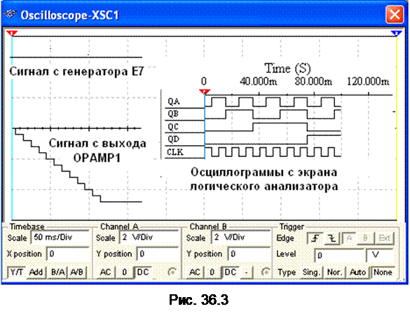

3. ВАРИАНТ РЕАЛИЗАЦИИ АЦП ПОСЛЕДОВАТЕЛЬНОГО СЧЕТА
В качестве примера
рассмотрим структурную схему АЦП последовательного счёта с ЦАП в цепи обратной
связи (рис. 36.1, б) и вариант её реализации (рис.
36.2). По сигналу "Пуск" на вход обнуленного счётчика СТ начинают подаваться импульсы генератора тактовой частоты ГТИ (см. рис. 36.1, б). По мере
поступления этих импульсов растёт входной код ЦАП и ступенчато повышается напряжение
uцап на его выходе,
причем уровень ступени соответствует шагу квантования Du входного напряжения
uвх АЦП.
Процесс
преобразования заканчивается, когда напряжение uцап станет чуть больше
входного напряжения uвх АЦП, поданного на
вход ОУ, на котором собран компаратор.
При этом работа счётчика прекращается, а на его выходе устанавливается код Аi, являющийся
цифровым эквивалентом напряжения uвх.
Согласно рассмотренной структурной
схеме АЦП на рис. 36.2 приведен вариант реализации модели 4-разрядного АЦП
последовательного счёта с ЦАП, состоящего из операционного усилителя OPAMP1 и резистивной матрицы R1, …, R4 со взвешенными сопротивлениями. Переключатели Key1, …, Key4 в схеме
(при разомкнутом ключе Space) служат для проверки работы счётчика СТ, а осциллограф XSC1 - для снятия осциллограмм напряжения с
выхода ЦАП и входа компаратора.
При запуске
моделирования АЦП сформированные генератором Е1
импульсы подаются на вход счётчика СТ, число
которых последовательно высвечивается на 7-сегментном индикаторе. Выходные
поразрядные сигналы со счётчика поступают также на входы логического
анализатора XLF1 и входы резистивной
матрицы R1, …, R4, а суммарное
напряжение с матрицы - на вход ОУ. Ступенчатое напряжение uЦАП с выхода OPAMP1 (рис. 36.3)
подаётся на вход компаратора, собранного на операционном усилителе OPAMP2. На этот же вход подано постоянное напряжение uвх с генератора Е7 через делитель R6-R7. В момент, когда
указанные напряжения сравниваются, компаратор срабатывает, на элемент И (AND) подаётся логический
0 и прекращается работа счётчика, а на индикаторе высвечивается цифровой код (число
шагов квантования), соответствующий уровню uд(k).
Анализ временных
диаграмм сигналов с выхода счётчика и осциллограмм напряжений с входов
компаратора (см. рис. 36.3) показывает, что счётчик прервал счёт с приходом
двенадцатого тактового импульса, поэтому на 7-сегментном индикаторе
высветилось число С16 (122)
(см. рис. 36.2).
Погрешность преобразования зависит от
шага квантования (высоты ступени напряжения uцап), погрешности в формировании
ступенчатого напряжения uцап и ошибки компаратора в определении
равенства uвх и uцап. Время преобразования непостоянно и
зависит от уровня напряжения uвх. При
заданном числе разрядов АЦП время преобразования определяется числом
периодов счетных импульсов.
|  |
По структуре построения ИМС АЦП
подразделяют на АЦП с применением ЦАП и без них. К БИС АЦП
без ЦАП, например ИМС КР572ПВ2, К107ПВ2 и др., относят АЦП последовательного
счёта с двойным интегрированием (на первом такте - входного напряжения, на втором – эталонного
напряжения с преобразованием результатов интегрирования во временной интервал и
в эквивалентный цифровой код) для сглаживания импульсных помех, повышения
точности и помехозащищённости данного типа АЦП [12].
Платы АЦП/ЦАП, например, модели LTC российской компании ЗАО "Л-КАРД", широко применяют в
цифровых измерительных приборах, в системах и устройствах обработки и
отображения информации, в автоматических системах контроля и управления, в
устройствах ввода-вывода информации ЭВМ и т. д.
Основные
направления развития АЦП – повышение
быстродействия основных узлов, в частности, компараторов до 5…10 нс, повышение
их точности до 0,05…0,005%, увеличение разрядности преобразователей до 24, использование
микропроцессоров в преобразователях.